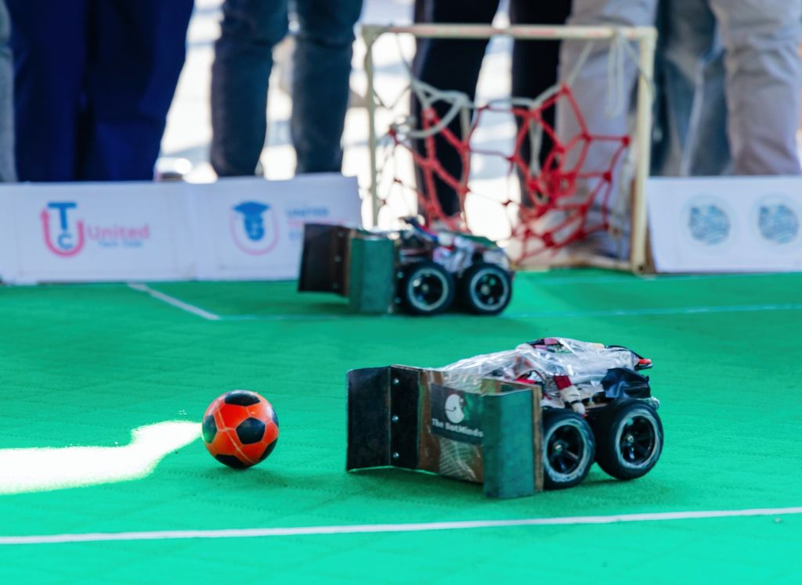
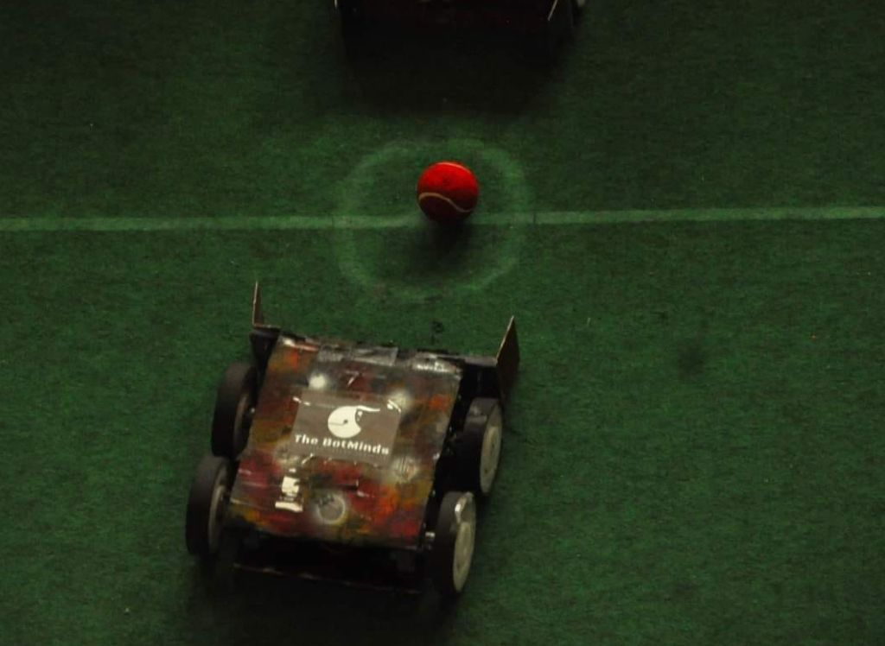

Robo Soccer

Robo Soccer is a manually controlled robot designed to play soccer in a team-based competition. It features a rugged and responsive control system,
fast motors for dribbling and chasing the ball, and a front-mounted kicking mechanism. The robot is tuned for agility, coordination, and rapid direction changes,
mimicking human soccer moves.
Technologies Used
- ⚙️ Drive: Dual-motor with omni-wheel or skid-steering
- 🔋 Power: 12V battery system with buck converter
- 🧠 Controller: Arduino UNO + RF module (manual control)
- ⚽ Mechanism: Servo-based kicking system
- 🎮 Control: Joystick and Switch Board Remote
GitHub Repository
View on GitHub
Project Report
Gallery

← Back to Projects